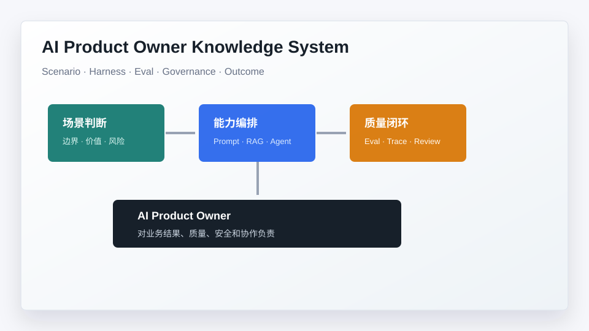

公开发布版 · Tailwind v4
把 AI 能力放进真实业务流程，并对结果负责。
这套知识库不是术语堆叠，而是一条从场景判断、能力编排、质量评测到治理复盘的学习路径。你可以按路径学习，也可以直接进入某个模块解决手头问题。

57篇文章
5个模块
138分钟阅读
90k字内容
第一步
先确定自己在哪条学习路径
第二步
进入模块，按顺序读关键文章
第三步
把文章转成模板或项目交付物
第四步
用 Eval、治理和复盘证明结果
先选一条阅读路径
不要从目录里迷路。根据你现在的目标，直接进入最有用的路线。
转岗快速路径
适合交互设计师、传统 PM，先建立定位，再补核心概念，最后形成作品集。
项目落地路径
适合已经有一个 AI 项目在手的人，直接从场景边界、链路、评测和上线推进。
Agent 系统路径
适合想理解下一代 AI 产品结构的人，重点看 Agent、Skill、Gateway 和治理。
知识库模块
每个模块都有自己的目标、文章顺序和可交付物。
9 篇
→
入门与总览
先知道这套知识库怎么读
帮读者建立 AI Product Owner 的整体坐标，知道自己要补什么、先读什么、最后要交付什么。
20 篇
→
核心知识
从场景、Prompt、RAG 到 Agent
把 AI 产品里最容易混淆的概念，翻译成产品经理能写进 PRD 和评审会的话。
6 篇
→
实战项目
用一个用户研究助手串起方法
通过完整项目，把输入、链路、界面、评测、上线和复盘连成一个可展示的作品。
18 篇
→
工作模板
直接拿去写 PRD、评测和复盘
把抽象方法沉淀成工作表、清单和评审材料，降低真正落地时的空转成本。
4 篇
→
成长与作战
从能力模型到作品集和落地流程
帮助读者把学习成果包装成可证明的能力，并形成从 0 到 1 推动 AI 产品的节奏。